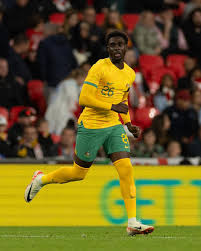

| Nombre | Posición | Edad | Biografía | Portada |
|---|---|---|---|---|
| Noah Botic | Delantero | 23 | Nacido en 2002, Botic es un joven delantero australiano con gran proyección. Ha destacado en selecciones juveniles y clubes locales. |
 |
| Nishan Velupillay | Extremo | 23 | Nacido en 2002, Velupillay es un extremo rápido y habilidoso que juega en Melbourne Victory. Ha sido convocado a la selección sub-23. |
 |
| Harry Souttar | Defensa central | 27 | Nacido en 1998, Souttar es un defensor imponente que juega en Leicester City. Fue figura en el Mundial 2022 con Australia. |
 |
| Ajdin Hrustic | Volante | 29 | Nacido en 1996, Hrustic es un mediocampista técnico con experiencia en Alemania e Italia. Ha sido clave en el medio campo australiano. |
 |
| Alessandro Circati | Defensa | 22 | Nacido en 2003, Circati es defensor del Parma en Italia. De ascendencia australiana, ha sido convocado recientemente a la selección absoluta. |
 |
| Cameron Burgess | Defensa | 29 | Nacido en 1996, Burgess juega en Ipswich Town. Es un defensor sólido que ha representado a Australia en categorías juveniles y mayores. |
 |
| Jackson Irvine | Volante | 32 | Nacido en 1993, Irvine es un mediocampista con liderazgo y experiencia internacional. Ha sido capitán en varios partidos de Australia. |
 |
| Mathew Ryan | Portero | 33 | Nacido en 1992, Ryan es el arquero titular de Australia. Ha jugado en clubes como Brighton, Real Sociedad y Copenhague. |
 |
| Mohamed Touré | Delantero | 21 | Nacido en 2004, Touré es un joven atacante con gran velocidad y potencia. Juega en Francia y es parte del recambio australiano. |
 |
| Nestory Irankunda | Extremo | 19 | Nacido en 2006, Irankunda es una de las promesas más emocionantes del fútbol australiano. Juega en Bayern Múnich y destaca por su explosividad. |
 |